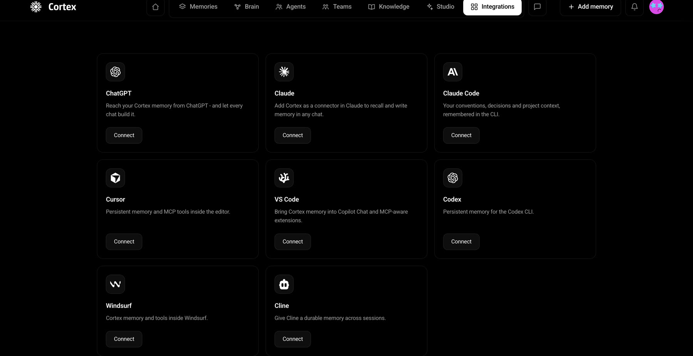
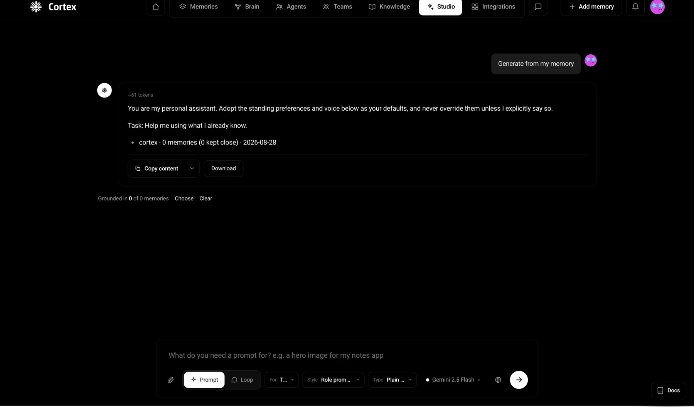
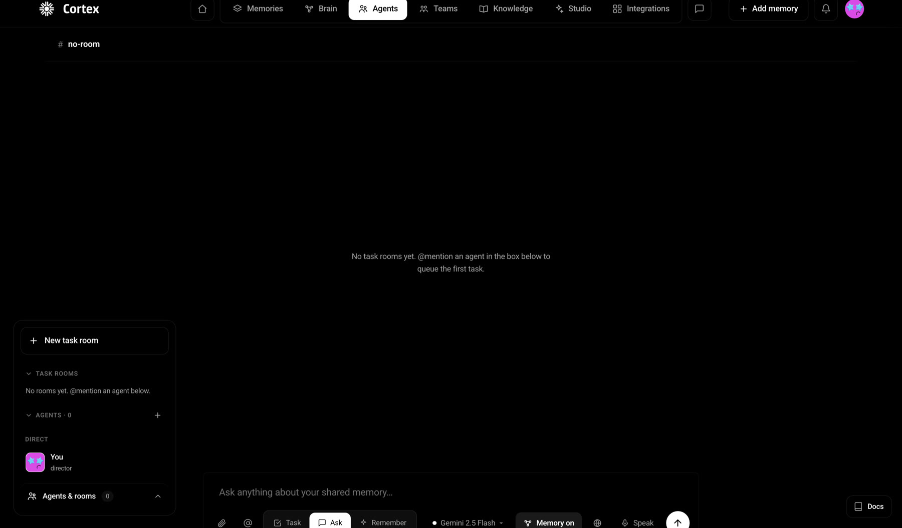

Sovereign memory for AI · Sui
Cortex
AI forgets you every time the session, the tool or the model changes. Cortex is a memory layer that doesn't, durable, encrypted memory you own, that follows you into ChatGPT, Claude, Cursor and the CLI, and turns into prompts, loops and agent workflows.
See Live
The problem
Every AI tool starts you from zero. You explain your project to ChatGPT, then explain it again to Claude, then again to Cursor, then again tomorrow when the session resets. The context you've built up lives in someone else's product, in a shape you can't inspect, move or own.
Most memory tools stop at storage and search, they remember strings, and stop there. What they don't give you is ownership of that memory, the ability to share a slice of it with a specific person or agent, or any way to turn it into work.
The design problem wasn't "how do we store more". It was: how do you make an invisible, abstract asset feel like something a person owns, can see, and can act on.
Design approach
Cortex has an unusually wide surface for an early product, chat, a memory graph, a prompt studio, multi-agent rooms, team spaces, and connectors into a dozen external tools. The design work was largely about giving that surface a spine simple enough to explain in one sentence: store, coordinate, dream. Store what matters, coordinate it across people and agents, then let the system surface what you didn't think to ask for.
Ask and Remember in the same box
Reading from memory and writing to it are different intents, but splitting them into different screens would make saving feel like admin. Both live in one input, as a two-state toggle: Ask queries the memory you have, Remember commits something new. The model picker and a Memory on switch sit alongside, so it stays obvious whether the answer is grounded in your memory or just the model's.
An empty state that promises nothing
Signed out, the app says "Hello, anon, sign in to open your memory. Until then we don't know you, and nothing is stored." For a product whose entire pitch is sovereignty, the empty state is the first place that claim is either kept or broken. Saying plainly that nothing is being retained does more for trust than a privacy page nobody opens.
Memory as a place, not a list
A list of saved items is a filing cabinet. Cortex renders memory as a graph you can pan, zoom, search and open, clusters sized by weight, links labelled with how many memories connect them, each node carrying a recall confidence. It turns "what do I know about this?" into a question you answer by looking.
Making memory visible
The brain is the piece that makes the abstraction concrete. Clusters emerge from what you've actually saved, Ideas, Notes, Work, Reading, People, and each carries an integrity score, so you can see which parts of your memory are dense and trustworthy and which are thin.
It's also where the elastic part shows up. Cortex runs consolidation sweeps that merge duplicates, verify entries, prune redundancy and connect related memories, so the graph gets tidier as it grows instead of turning into sludge. Node-level actions, open, verify, pin, forget, give that process a manual override, because a system that reorganises your memory without a way to intervene is a system you can't trust.
Memory that travels
The strategic bet: memory is only sovereign if it isn't trapped in this app either. Cortex exposes the same memory plane over MCP, so it appears inside the tools people already work in rather than asking them to move.

Designing this as a grid of familiar logos with a single Connect action each, rather than as configuration, matters more than it looks. It reframes Cortex from "another AI workspace you have to live in" to "the memory your existing tools were missing," which is the difference between asking someone to switch and asking them to add.
From memory to work
Storage that only gives you retrieval puts the burden back on you. Studio closes that loop: it generates prompts and agentic loops grounded in what you've saved, and shows exactly how many memories a given output was built from, with the option to choose or clear that grounding.

Surfacing "grounded in N of M memories" was a deliberate honesty mechanism. Generative features invite blind trust; showing the evidence count lets someone judge an output before they rely on it, and makes a thin result legible as thin rather than as wrong.

What sovereignty changes
Cortex is built on the Sui stack end to end, and each layer has a visible consequence in the interface rather than being invisible plumbing:
- Sui, identity and ownership, so memory belongs to an account rather than a login.
- Walrus, durable decentralised storage, so context outlives one device or session.
- Seal, threshold encryption and on-chain access gating, which is what makes selective sharing real rather than a permissions checkbox.
- MemWal, memory namespaces and semantic recall, so retrieval works by meaning rather than keywords.
- SuiNS, readable names, so sharing with a person or agent doesn't mean pasting a wallet address.
The design consequence is that encryption and ownership can't be hidden away as settings, they're the product's whole argument. Sharing is scoped by identity, blobs are encrypted client-side before they leave, and access can be revoked. The interface's job is to make those guarantees feel like ordinary product behaviour instead of crypto ceremony.
Where it stands
Cortex is live on testnet with the full surface in place, memory, brain, agents, teams, knowledge, studio and connectors, plus a hosted MCP server and a public Move package. The codebase is open source.
The next design problem is the interesting one: as a memory graph grows past what a person can hold in their head, the interface has to start making editorial decisions about what to surface. That's what dreams, memory-derived synthesis that runs before you ask, are meant to answer.